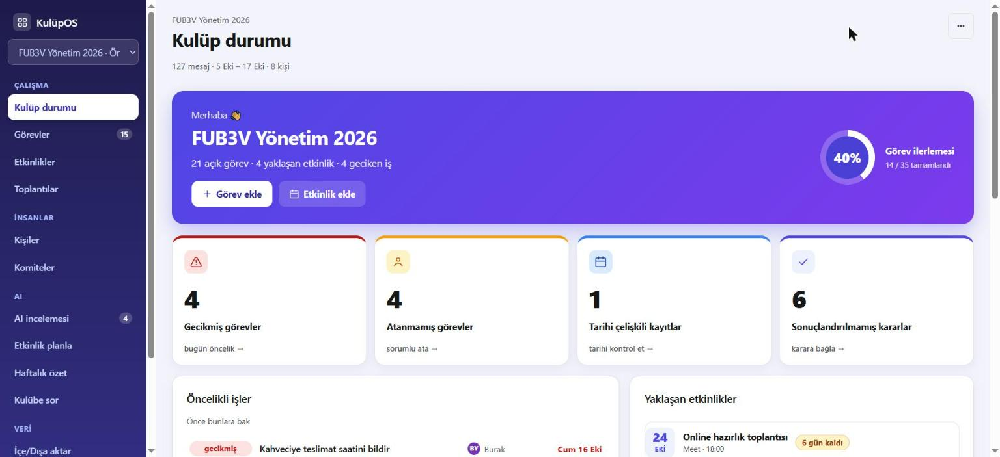
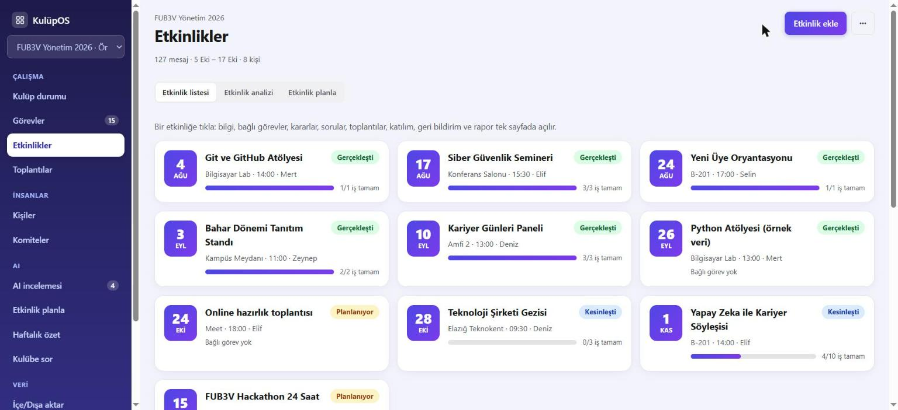
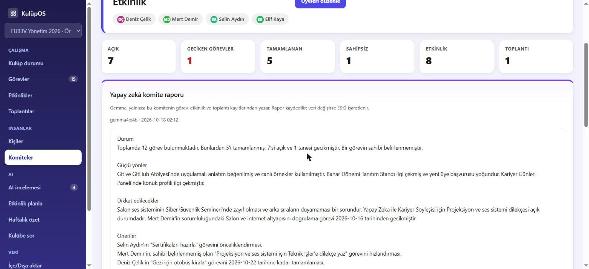
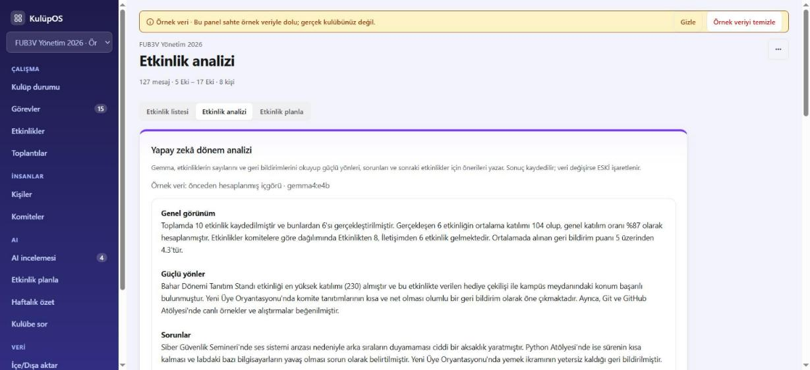
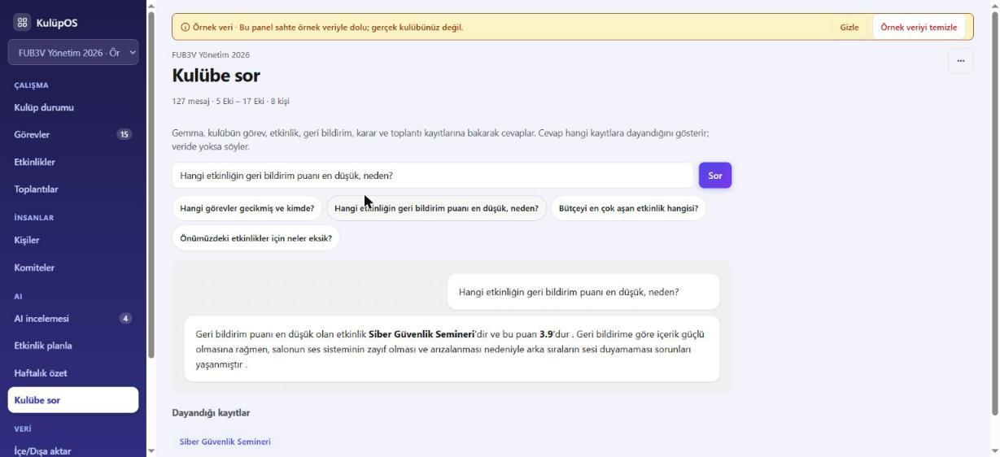

Öğrenci kulüplerinin işletim sistemi: her şey tek yerde, yapay zekâ analiz eder, veri senin bilgisayarında kalır.
Görev bir sohbette, karar birinin defterinde, etkinlik verisi bir tabloda. Neyin nerede olduğu belli değil.
Sorumluluklar karışıyor; kim neyi yapıyor, neyi geciktiriyor görünmüyor.
Festival, konferans ve etkinlikler üst üste biniyor; hazırlıklar ve sponsor işleri kayıyor.
Etkinlik nasıl geçti, neyi düzeltmeli? Sonuçlar analiz edilmeden kayboluyor.


Etkinlikler: durum, tarih, hazırlık ilerlemesi.

Komiteler: üyeler, iş yükü, görevler, etkinlikler.
Dönem analizi: etkinliklerin sayılarını ve geri bildirimlerini okuyup güçlü yönleri, sorunları ve sonraki etkinlikler için öneriyi yazar.
Komite raporu: her komitenin kendi görev, etkinlik ve toplantılarından rapor.
Etkinlik raporu, haftalık özet, "Kulübe sor": hepsi kulübün gerçek kayıtlarından; kaynak kayıtları gösterilir.
Sonuçlar sistemde saklanır ve veri değişirse "ESKİ" işaretlenir.


Gemma cevabı yalnızca kulüp kayıtlarına dayanarak yazar ve hangi kayıtlara baktığını gösterir.
Veride yoksa "yok" der, uydurmaz.
Gemma'nın her cevabı kodda denetlenir: kaynak, kişi, tarih, sayı, alıntı. Veride olmayan bir sayı veya isim geçen metin reddedilir.
Kaynağı olmayan yapay zekâ kaydı kesin sayılmaz, onaylanamaz.
Öneriler ayrı kuyrukta bekler; sen onaylamadan gerçek veri olmaz.
Bilinmeyen sorumlu veya tarih boş kalır. Raporlar yalnızca girilmiş veriden yazılır.
Bulut yok, mesaj metni günlüğe yazılmaz, notlardaki "talimatlar" komut olmaz.
elle yazılmış kontrol (TR demo sohbet, 127 mesaj). Önceki koşular: 7 ve 11.
(~230 sn) RTX 3050 4 GB laptopta 127 mesajlık analiz, tamamen yerel.
toplantı önerisinin alıntısı notta gerçekten var (2 kısa toplantı).
otomatik test (sahte modelle); canlı model ayrı betiklerle denendi.
Öğrencilerin adı ve mesajları bilgisayardan çıkmaz.
Kullanım ücreti yok; istediğin kadar yeniden analiz.
Model indirildikten sonra internetsiz çalışır.
PANO_MODEL ile istediğin açık modeli tak.
Side hustle (planlı): kulüpler için ücretsiz; üniversitelere ve kurumlara kurulum ve destek hizmeti.
Planlı (henüz yok): roller ve kullanıcı başına veri ayrımı · sistem içi mesajlaşma · toplantı ses kaydı · bütçe ve sponsor takibi · dış entegrasyonlar.
Dene: github.com/sudenurozturkk/kulupos